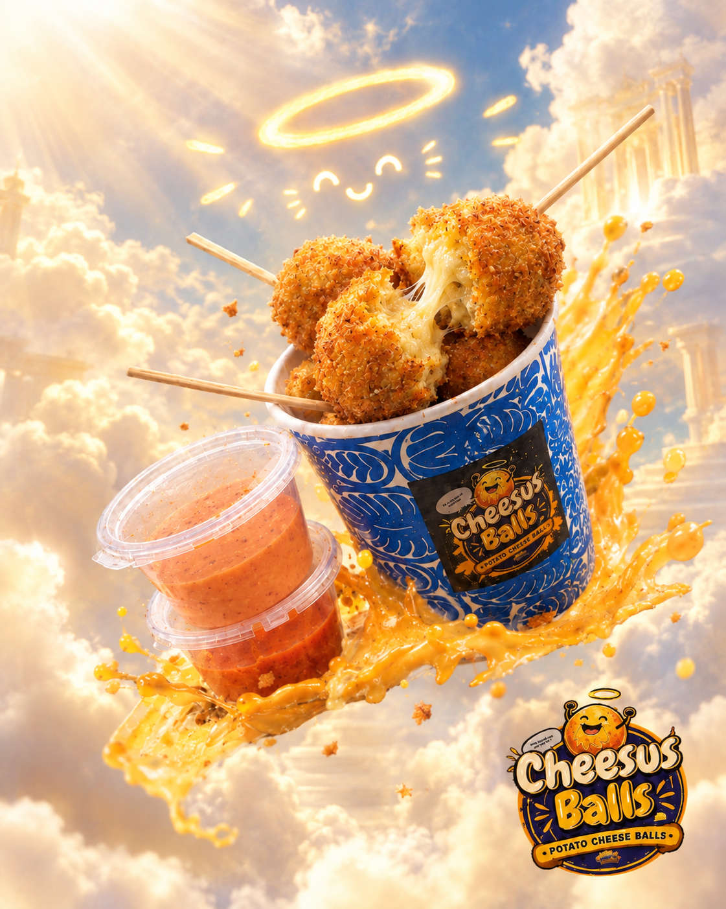

✦ THE ORIGINAL
THE CLASSIC FAVORITE
Cheesus Balls
Our original potato cheese balls feature a crispy breadcrumb coating with delicious melting cheese inside. Served with our classic ketchup and mayonnaise sauce, it's a simple snack made for cheesy cravings.
- ✓ Crispy breadcrumb coating
- ✓ Melting cheese filling
- ✓ Classic ketchup and mayo dip
- ✓ Perfect for sharing